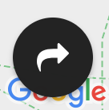

Our Data Protection Statement
Data Protection is important for us. It is literally the main reason why we came up with meeteora in the first place.
This means we will try to store as little as possible data of you. But we cannot work without any data, this is why this page gives you the details on what we store and why.
Data managed in cookies
We use cookies to persist some data inside your browser so it can be used again when you use meeteora again. These cookies are only read by the javascript executed in the browser and never directly on the server. If data from cookies needs to be sent to the server, it is sent over the API requests (see section below for details).
Cookie Details
| Cookie Name | Content | Description |
|---|---|---|
| This stores your user ID |
We need a user ID to technically identify you inside our databases. Only this way we can ensure that the position updates your browser sends us update your position (and not the position of somebody else When this cookie is not present, we need to assume, that you have never before used meeteora. In this case a new user ID gets generated for you on our servers. |
|
| This stores the name you have set |
Everybody on a meeteora map is shown as an icon and a short name. To automatically re-use the name you have last used, we need to remember it somewhere (in this cookie). Initially your name gets created randomly (so that at least something is shown). Later on you can save change is by yourself. |
Data sent to / from / stored on our servers
| What | Action | Details |
|---|---|---|
| User ID | Stored on Server |
Your user ID gets stored with your last known position on the server. We need to do this so we can send your current position to the other users. If you are part of several maps your user ID will be stored several times. |
| User ID | Sent from server |
There are different occasions at which the server sends user IDs back to you.
|
| User ID | Sent to server | We send your user ID (together with your current position and user name) to the server roughly every 5 seconds. This way wen can enable our almost realtime experience. |
| Your Location | Stored on server | To be able to send updates to all members of a map we need to store the combination of your user ID, your user name, your current location and the map ID in our databases. We only store one recordset for you on any given map. This recordset contains only your last known positions. We deliberately do not store your trails or movements. |
| Your Location | Sent from server | Your position is sent to all members of the same map so they can see who's where. Your location is sent in combination with the name you have set, but not in combination with your (unique) user ID. |
| Your Location | Sent to server | We send your current position (together with your user ID and user name) to the server roughly every 5 seconds. This way wen can enable our almost realtime experience. |
| Your User Name | Stored on server |
To be able to send updates to all members of a map we need to store the combination of your user ID, your user name, your current location and the map ID in our databases. We only store one recordset for you on any given map. This recordset contains only your last known positions. We deliberately do not store your trails or movements. |
| Your User Name | Sent from server | Your user name is sent to all members of the same map so they can see who's where. Your user name is sent in combination with your current location, but not in combination with your (unique) user ID. |
| Your Location | Sent to server | We send your user name (together with your user ID and current location) to the server roughly every 5 seconds. This way wen can enable our almost realtime experience. |
| Map ID | Sent from server |
There are different occasions at which the server sends map IDs back to you.
|
Important: We do not store trails of your positions. Only your last known position gets stored.
Everything we send to our servers (and back) happens over our API. You can find the API DOC here.
Third party tools
To save us some development time, we use third party tools in different places. For those that may store some of your data, we list their dataprotection links below.
AddThis
We use AddThis to enable the sharing of maps. You find the accoring sharing functionality on every meeteora map on the bottom left indicated by this icon:

You may find The Privacy & Data Practices of AddThis here: https://www.addthis.com/privacy
Google Maps API
We use the Google Maps JavaScript API (Details here) to render the maps of meeteora.
Even as we try to avaid as much data-storing and data-sending as possible, some data may be stored by google. Please see this FAQ and Google's Terms of Service for more details.